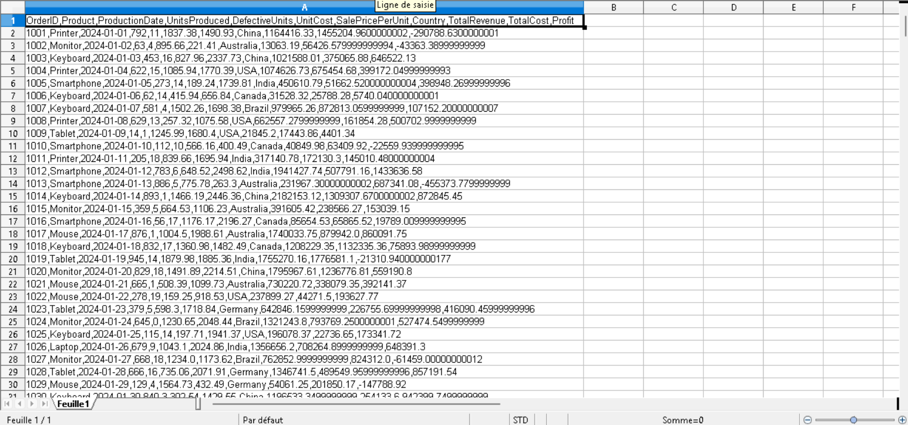

This is how a CSV file looks when opened:
This is the Jupyter Notebook where we will run Python code:
import pandas as pd
# Verify the working directory and ensure the CSV file is located there
import os
print(os.getcwd())
# Load CSV into a DataFrame
df = pd.read_csv('business_production_data.csv')
# Display the first 5 rows
print(df.head(5))
# Show columns
print(df.columns)
# Filter rows
high_SalePricePerUnit = df[df['SalePricePerUnit'] > 1000]
print(high_SalePricePerUnit)
# Save filtered data to a new CSV
high_SalePricePerUnit.to_csv('high_SalePricePerUnit.csv', index=False)